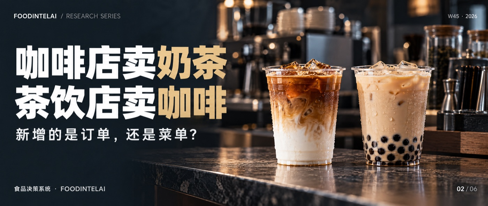

咖啡机装进1.35万家古茗，日均出杯量只从439杯到440杯：新增的是订单还是菜单消费任务与跨业态替代研究 · 第2篇 跨品类进入与蚕食 ｜ QTOS-DEMAND-001-BFoodIntelAI 研究组 · 沧林 ｜ 2026年11月3日 ｜ W45专题 2/6古茗给九成以上的门店装了咖啡机，单店日均出杯量却只从439杯变成440杯。咖啡带来的，是新增订单，还是只是菜单变长了？公开数据告诉我们结果，告诉不了原因。第二篇建立一个识别新增与蚕食的方法。
图｜FoodIntelAI W45 系列（共 6 篇），本篇为第 2 篇。古茗2026年上半年的中期业绩里，有两个数字挨在一起：单店日均GMV从7600元升到7800元，增长2.6%；单店日均出杯量，从439杯到440杯。公司的解释是，丰富咖啡产品和拓展早餐场景托住了单店表现，第三方外卖平台补贴减少则是拖累。文献杯量几乎没动，金额涨了。把日均GMV除以杯量，单杯GMV从约17.3元升到约17.7元，增长约2.4%。截至6月底，古茗约13500家门店配备了咖啡机，占门店总数的九成以上，上半年推出了12款咖啡新品。咖啡进了几乎所有的门店，日均订单却没有多出来，增长体现在了每一杯的价值上。文献笔者测算再看另一头。瑞幸2026年第二季度，月均交易客户1.127亿，同比增长22.9%，自营门店同店销售额却同比下降5.3%。人变多了，每家店分到的变少了。文献跨品类进入，新增的究竟是订单，还是只是菜单？公开数据能告诉我们结果，告诉不了原因。本篇是W45专题的第二篇，要建立的是一个可以识别新增销量、内部替代和不可识别部分的方法，并明确指出，目前缺的是哪几项证据。439→440杯古茗2026年上半年单店日均出杯量+2.6%古茗单店日均GMV同比（7,600元→7,800元）−5.3%瑞幸2026年二季度自营门店同店销售额同比金色为增长，黑色为下降，柱长按绝对值绘制。不同报道对2025年三、四季度的数值相差0.1个百分点，此处取其一。把古茗的单店GMV拆开：GMV等于杯量乘以单杯GMV。上半年杯量增长约0.2%，单杯GMV增长约2.4%，合起来是2.6%。这个结果可以对应很多不同的故事，至少混着三股力量（表1）。笔者测算单杯GMV上升，本身也有很多可能：涨价、产品结构调整、小料加购，咖啡只是其中之一。公开的业绩公告里，没有给出这些因素各自的贡献。咖啡替代了原有茶饮杯减少茶饮、增加咖啡不能，缺同一消费者的跨品类记录这就是研究纪律在这里的具体含义：看到门店装了咖啡机、咖啡新品上了菜单，不能直接推出订单被蚕食，也不能直接推出订单被带动。杯量持平，既可能是咖啡没带来增量，也可能是咖啡增量刚好抵消了外卖补贴退坡的拖累。瑞幸的同店数据从2025年三季度的约14%，一路降到2026年二季度的负5.3%，连续三个季度走低。管理层的解释是，去年同期外卖平台的高额补贴把订单量顶到了异常的高点，今年补贴退坡，同店自然回落。第二季度的配送费用同比下降3.1%，是外卖大战以来首次同比下降，与这个说法一致。文献高基数是一种可能，但同期门店净增2714家、总数达36310家，密度提高带来的内部分流，同样可能压低同店；其他品牌的进入、产品结构变化，也都不能排除。从公开数据看，三种解释都说得通，没有一种能被单独证明。市场上常把同店下滑直接写成“自己打自己”，这是评论，不是证据。文献研究假设“高基数”这个解释，其实可以变成一个能检验的命题：如果同店下降主要来自外卖补贴退坡，那么剔除外卖订单之后，堂食和自提的同店不该明显下降。这需要分渠道的同店数据，目前企业没有披露。研究假设古茗约13500家门店配备咖啡机，占比约94%；茶百道的现磨咖啡机覆盖超过2700家门店，占8863家门店的约30%。茶百道此前给出的规划是，2026年底咖啡业务覆盖2000家门店、咖啡杯量占比提升到15%左右，实际覆盖数量已经超过了这个目标。文献笔者测算这些数字证明的是覆盖，不是销量。咖啡杯量占总杯量的实际比例，两家都没有披露；咖啡出现在哪些时段、是不是原有顾客在买，也没有。古茗还在继续扩张菜单：据36氪报道，9月前后又在个别门店测试现打鲜啤、手工冰淇淋。每增加一个品类，设备、原料、培训和出杯时间都要重新算一遍，菜单复杂度的成本，同样没有公开的数据。古茗创始人在业绩会上的一段话，值得放在这里对照：如果放开选址标准，上半年开店数量可以更高，但低质量点位会稀释存量加盟商的生意。同样的逻辑，也适用于菜单：品类加得越多，新增品类对老品类的分流，越需要被量化。文献反方向也一样。瑞幸的现制饮品收入111.55亿元，占净收入的70.2%，但公开数据里没有咖啡与非咖啡的拆分；它近期还在推出酸奶等新系列。咖啡店往茶饮和其他品类延伸，同样缺少可以检验的杯量数据。文献本篇给出的跨品类进入与蚕食效应模块，分三层（表2）。越往下，证据越强，需要的数据也越难拿到。拆解把杯量按品类、时段、渠道拆开咖啡与茶饮杯量，分时段企业对照比较装机门店与未装机门店的同期变化分批上线的门店明细企业同客追踪同一消费者是否跨品类购买会员的购买记录企业第二层是最有希望的。装咖啡机不是一天完成的：古茗到6月底覆盖九成以上，茶百道只覆盖三成，意味着至少在茶百道，装机前后、装机与未装机门店之间，天然存在一个对照。把装机门店和未装机门店在同期的茶饮杯量变化相减，得到的才是更接近“替代”的数字。这需要门店级数据，只有企业手里有。研究假设没有企业级数据怎么办？一家十几家店的小连锁，也可以做：选三五家门店先上线新品类，另外三五家后上线，各自记录四周的分品类、分时段杯量，就能得到一个粗糙但可用的对照。样本小，只能当线索，不能当结论，但比什么都没有强得多。研究假设三层的结果，可以归成三类：新增销量、内部替代和不可识别。内部替代杯量 = 装机门店的茶饮杯量下降 − 同期未装机门店的茶饮杯量下降新增销量等于咖啡杯量减去内部替代杯量；两者都算完之后，剩下没法归因的，就是不可识别部分，例如外卖补贴、天气、加密。不可识别部分要老老实实写出来，不能硬分给某一边。为什么要这么麻烦？表3用虚构数字演示：同样是日均杯量从439杯到440杯，可以对应完全不同的故事。示意表3 同样的“439→440杯”，两种故事（虚构演示）情景A里，咖啡带来了26杯净新增，是外卖补贴退坡把它抵消了；情景B里，咖啡几乎全是在替代原有茶饮。两个情景的经营含义完全相反，前者应该继续加码，后者说明咖啡只是在内部倒来倒去。公开数据看到的都是同一个“439到440”。如果你也在考虑给门店加一个品类，三件事先做好：新品类上线前，就设计好能拆出新增杯和替代杯的记录，按品类和时段分别统计；分批上线，保留一部分门店作为对照，不要一次全铺；把每多一个品类的设备、原料、培训和出杯时间的成本，单独算一笔账。在经营判断上，目前的公开证据只够给出一个结论：对古茗与茶百道的咖啡业务，暂不判断。覆盖已经很高，增长也有咖啡的功劳，但新增与替代的比例，没有证据。对瑞幸的同店下滑，同样暂不判断。一张跨品类进入的决策卡，至少写四行：新品类是什么，现有证据的等级，还缺什么证据，下一步用什么试验补。四行写不满，就说明还不该下判断。下一篇换一个方向：零食店开始卖新鲜，保质期缩短，生意就会更好吗。我们会检查新鲜度、周转和损耗之间的关系，特别是所谓高毛利，能不能变成实际的贡献利润。完整研究 · foodintelai.com 知识库跨品类进入与蚕食效应模块、三层识别方法，随专题推进陆续沉淀到青藤OS。[1] 古茗（01364.HK）2026年中期业绩（2026年8月26日发布），经华福证券研报、华尔街见闻、36氪、中国经济时报相互核对：收入74.7亿元，同比增长31.9%；单店日均GMV由7,600元升至7,800元，日均出杯量由439杯升至440杯；公司称咖啡品类与早餐场景对单店形成支撑，第三方外卖平台补贴减少构成拖累；约13,500家门店配备咖啡机，上半年推出12款咖啡新品；小程序会员数突破2.3亿；门店14,351家，新开1,318家、关闭521家。创始人关于选址标准与存量加盟商的表述，见界面新闻2026年9月报道。9月前后测试现打鲜啤、手工冰淇淋，见36氪2026年9月21日报道。[2] 茶百道（02555.HK）2026年中期业绩（2026年8月28日发布）：门店8,863家；现磨咖啡机覆盖超2,700家门店（中国经济时报）。2025年推出17款咖啡新品，规划2026年底咖啡业务覆盖2,000家门店、咖啡杯量占比约15%（腾讯新闻2026年6月22日报道，为公司规划，不是实际数据）。[3] 瑞幸咖啡（LKNCY）2026年第二季度业绩（2026年8月3日发布），经网易亿邦、界面新闻、格隆汇、凤凰科技、华尔街见闻相互核对：门店36,310家（自营23,734家，联营12,576家），季度净增2,714家；月均交易客户1.127亿，同比增长22.9%；净收入158.86亿元，同比增长28.5%；自营门店同店销售额同比下降5.3%（2026年一季度下降0.1%，2025年四季度约增长1.3%，2025年三季度约增长14.3%，各报道相差0.1个百分点）；管理层将同店下降归因于2025年外卖平台高额补贴形成的高基数；配送费用16.18亿元，同比下降3.1%，为外卖大战以来首次同比下降。证据等级：“文献”为企业业绩公告及主流媒体对公告的转述；“笔者测算”为基于文献数据的推算，仅用于判断方向；“研究假设”为本专题的判断，尚未经过样本验证；“示意”为演示用的虚构数值。
口径说明：(1) 单杯GMV为单店日均GMV除以日均出杯量，两者均为四舍五入后的数字，结果只能看量级。(2) 公开数据无法区分咖啡新增、内部替代与外卖补贴等因素的各自贡献，本文不宣称任何一种已经发生。(3) 茶百道的咖啡规划为公司的前瞻目标，不是实际数据。(4) 瑞幸管理层对同店下降的归因为企业解释，本文不将其作为定论。(5) 表3为虚构演示。
数据截止：2026年10月24日。声明：本文为行业研究，数据来自公开资料，不构成投资、经营或法律建议。本文在AI辅助下完成起草，经作者审核。